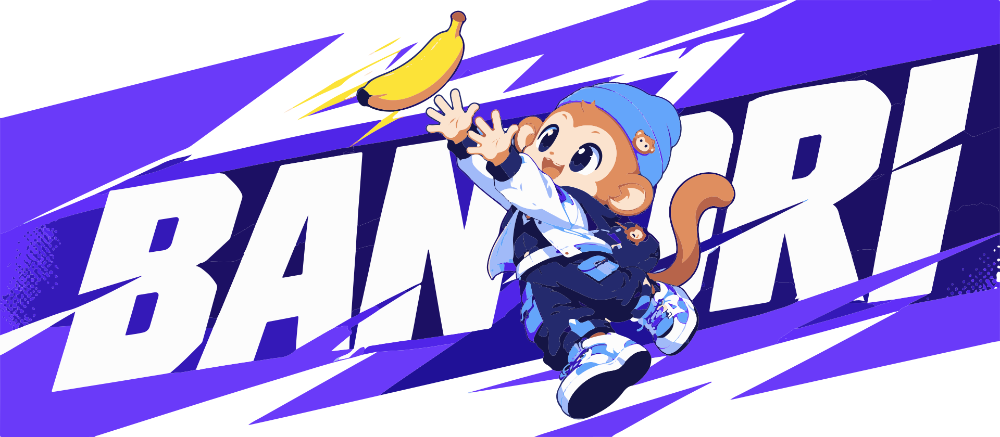

Play
A playful world built for adventure.
A playful world built for adventure, discovery and a greener tomorrow.

04 BANORI / OUR JOURNEY
A playful world built for adventure.
Colorful places, unique friends.
Together, for a greener tomorrow.
01 VISUAL IDENTITY / LOGO
PRIMARY LOGO / FULL COLOR
02 VISUAL IDENTITY / COLOR
#11165A
#6336FF
#2FC8D3
#83C967
#FF806E
03 VISUAL IDENTITY / TYPE
BANORI
WORLD
A playful world built for adventure, discovery and a greener tomorrow.